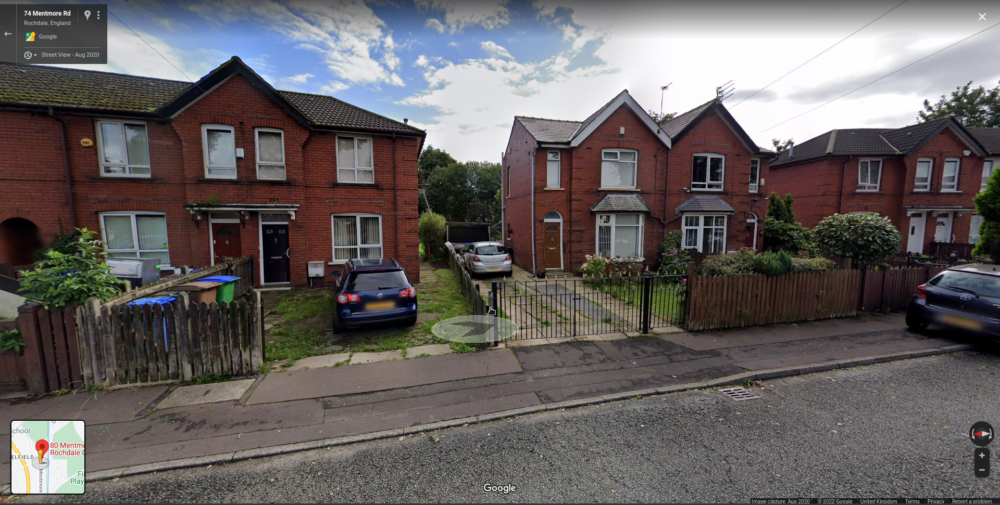

I responded to a telegram crypto scam, so you don't have to
The Conversation
I got a random telegram message today from somebody called "Lucy Abigail", who shared no groups with me and I had never heard of before. Usually, my go-to here is just to ignore the message and block the acccount, but today I was bored and decided to reply.
"Lucy" first messaged me claiming that they just wanted to chat, and initially even claimed to not know what bitcoin was:
<Lucy Abigail> I found your profile off a group so I choose to have conversations with you
<jan Niko (nico)> you're not trying to sell me bitcoin are you
<Lucy Abigail> Bitcoin?
This was maintained for about 2 messages, but even after I made it quite clear I wasn't interested in crypto investment, they started to hard pivot into their (probably scripted) sales pitch, to which I couldn't resist being a little snarky:
<Lucy Abigail> because if bitcoin rate falls, you will loose so much money, but when bitcoin rate rises you will make alote of profits, we only have advantages and disadvantages while trading cryptocurrency and selling it to Chinese investors, but when you make investments, you will be sure of earning 10% of your investments ever 24 hours, 20% Every 48 hours and in 3 days you will be getting 100% of your investments. You have no chance of loosing and investments has no harm or disadvantages
<jan Niko (nico)> have you heard of a guy named Charles Ponzi before?
<jan Niko (nico)> really interesting guy, good source to learn about investing
<Lucy Abigail> I dont
<Lucy Abigail> Bitcoin investment has really helped soo many people to invest and make money online, it has been the best way to make money from your comfort zone
<jan Niko (nico)> his work has been very influential on bitcoin. Worth looking up
When I asked if they were regulated under the UK FCA or the US SEC they said yes, but that registration information is only available to somebody once they have invested (which is the most obvious red flag for a scam I can think of), but of course, they "have approvals from government legislation, Interpol and guarantee trust pay refund". Ah, the famous financial regulator, Interpol. They then sent me a link to the "investment platform" they are promoting, and it was the best worst thing I have ever seen.
The Website
Upon visiting Alpha Finance Ltd (the legitimate, completely safe, and Interpol-approved trading platform) you are first met with an incredibly real banner (that I didn't even notice the first time I looked at it) declaring them the "Top Rated Cryptocurrency-Related Website" in wonderfully JPEG-artefacted, transparency-less glory:
Scrolling down the page, the first thing I noticed (after the claim that they were "reinventing the global equity blockchian (sic)" was that they were very proudly proclaiming on their site that they were a registered UK company, showing a screenshot of a document with their UK company number:
I was surprised to find out that this company was actually real! They have one employee who's also the founder, and their registered office is a random house on a residential street somewhere near Manchester (which my telegram scammer claims to have attended a cryptocurrency conference at). They officially provide "information service activities not elsewhere classified", which I suppose technically could include scams.
Company Records of "Alpha Finance"

Being a registered UK company, their activities would fall under the jurisdiction of the Financial Conduct Authority, so I contacted the FCA (who, by the way, have a special contact category for cryptocurrency scams) to report them. I might do a follow up post if anything comes of this. But that wasn't the end for me!

Further down on their page, you start hitting the prices. Depending on how much money you "invest", you will get a different percentage of return. This is in strict tiers, with specific return percentages for different amounts invested that are supposedly 100% certain within a certain time!
In case you didn't know, this is not how investing works. Any legitimate investment site will be very clear to tell you that returns are not always the same, prices can go down as well as up, your capital is at risk, and so on. You may have also noticed a "referral bonus", because yes, this also has pyramid scheme elements! As detailed completely transparently in their FAQ:
I was blown away with the legitimacy and attention to regulation and realistic claims made by this company, so of course I (well actually, Karl F. Chicken.) made an account. Their "terms and condition" don't get linked from the signup page, but surely there can be nothing bad in there, so I checked the box.
After signing up, I got sent to an investor's page:

At this point my scammer on telegram was starting to walk me through making a Binance account, and I realised this is as far as I could get without actually giving the scammers any of my money, so I reported them to telegram for spam.
So why did I do this? I don't know, it's my idea of fun. It may have got another crypto scam off the internet for now if the FCA do their job, and I could write a blog post to satisfy the curiosity of the nerds who follow me. Crypto as a whole is a scam, but sometimes it's at least obvious enough to be funny.